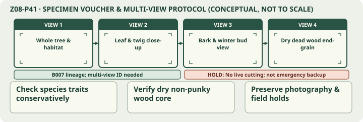

Z08-P41 · Rocks, minerals and materials · Adapted historical material
American Basswood and Quaking Aspen Material Screening
Screen dead dry American basswood and quaking aspen as regional low-resin soft hardwood candidates while keeping species and live-tree holds intact.
When it applies · Upper Midwest educational friction-material study on lawful dead downed wood.
Equipment · Regional tree guide, dead downed wood only; cold inspection.

Actions
- Reference regional tree traits—heart-shaped toothed leaves and bracted fruits for Tilia americana, white scarred bark and flat-stalked leaves for Populus tremuloides—using multiple traits rather than one cue.[R15, B16]
- Inspect only dead downed lawful wood by shaving a small face to confirm dry, sound, low-resin fibers that indent lightly with a fingernail without crumbling.[R15, C04]
- Keep friction-wood selection strictly framed as conditional educational screening; never depend on friction ignition in cold, wet, or hypothermic emergencies.[R15, C16]
Failure recognition · Grabbing damp punky aspen or mistaking dense hard maple for soft basswood wastes calories and fails to produce fine dry wood dust.[R15, C04]
Verify · Dead downed status, dryness, sound non-punky firmness, and lawful gathering permission are verified before training.[R09, R15]
Stop or change course · Stop immediately if cold, wet, injured, or exhausted—prioritize shelter and warmth over friction material trials, and never cut live trees.[R09, R15, C16]
Evidence and editorial notes
- B16 · Minnesota DNR · Native Trees of Minnesota Identification Reference (Current web edition)
- Section: Native Minnesota trees: bark, buds, leaves, cones, and nuts · Conditions: Identifying oaks, pines, birches, maples, basswood, walnut, and spruce across seasons
Support: Reliable tree identification integrates leaf/needle arrangement, bud scales, bark pattern, fruit/cone structure, and habitat across seasons.
Limitations: Tree nuts and bark materials can require specific processing (e.g., tannin leaching) and remain on consumption HOLD until reviewed. · Conflicting evidence: None noted.
Editorial note: Anchors Z05 regional tree-food & bark profiles. · Specialist reviewer: Forestry botanist
Primary source · checked 2026-11-25 - C04 · USDA Forest Service / Smokey Bear · Smokey Bear’s Campfire Safety Guide (agency PDF)
- Section: Maintain and extinguish a campfire · Conditions: Occupied campfire, water and tools available
Support: Stay with the fire. Drown, stir and add water again until cool. Leaving visible embers or merely covering them is unsafe.
Limitations: Deep duff or peat soils can hold smoldering embers underground even after surface ash cools. · Conflicting evidence: None; prohibits dirt-only burial as primary extinguishment.
Editorial note: Enforces drown-stir-feel-cold cycle before site departure. · Specialist reviewer: Fire prevention and land management
Primary source · checked 2026-11-24 - C16 · CDC · Carbon Monoxide Poisoning Basics (current web edition)
- Section: Carbon Monoxide Poisoning Basics > Sources and Prevention · Conditions: Any enclosed or semi-enclosed structure, garage, porch, tent, or vehicle
Support: Never burn charcoal, operate camp stoves, or run fuel-burning heaters inside homes, garages, tents, or vehicles even with doors or windows partly open.
Limitations: Vent cracks and open garage doors do not prevent lethal CO accumulation. · Conflicting evidence: Refutes dangerous myth that cracking a tent vent or garage door makes indoor combustion safe.
Editorial note: Hard-stop rule across all Z02 ventilation and Z03 combustion cards. · Specialist reviewer: Carbon monoxide safety and emergency medicine
Primary source · checked 2026-11-24 - R09 · Minnesota DNR · Minnesota State Park Rules and Resource Collecting Restrictions (Current web edition)
- Section: State park natural-feature protection · Conditions: Minnesota State Parks and Recreation Areas
Support: Removing rocks, minerals, soil, or live vegetation from Minnesota State Parks is prohibited to protect natural resources.
Limitations: Verify jurisdiction boundaries before picking up specimens even along shorelines or trails. · Conflicting evidence: None noted.
Editorial note: Bounds state-park material collection. · Specialist reviewer: Minnesota DNR resource manager
Primary source · checked 2026-11-25 - R15 · Minnesota DNR · Native Trees of Minnesota Identification Reference (Current web edition)
- Section: Regional wood species, grain, bark, and moisture variability · Conditions: Dead downed wood and natural bast fibers in Upper Midwest forests
Support: Wood density, grain straightness, resin content, and decay state vary widely by species, tree part, and moisture history.
Limitations: Visual grain inspection cannot certify structural load capacity; avoid cutting live trees where prohibited and reject punky or cracked wood. · Conflicting evidence: None noted.
Editorial note: Reconciles B007 wood notes with material limits. · Specialist reviewer: Forestry and wood-science specialist
Primary source · checked 2026-11-25
Source lineage · Adapted historical material (B007 wood selection) · Classification · Adapted historical material.